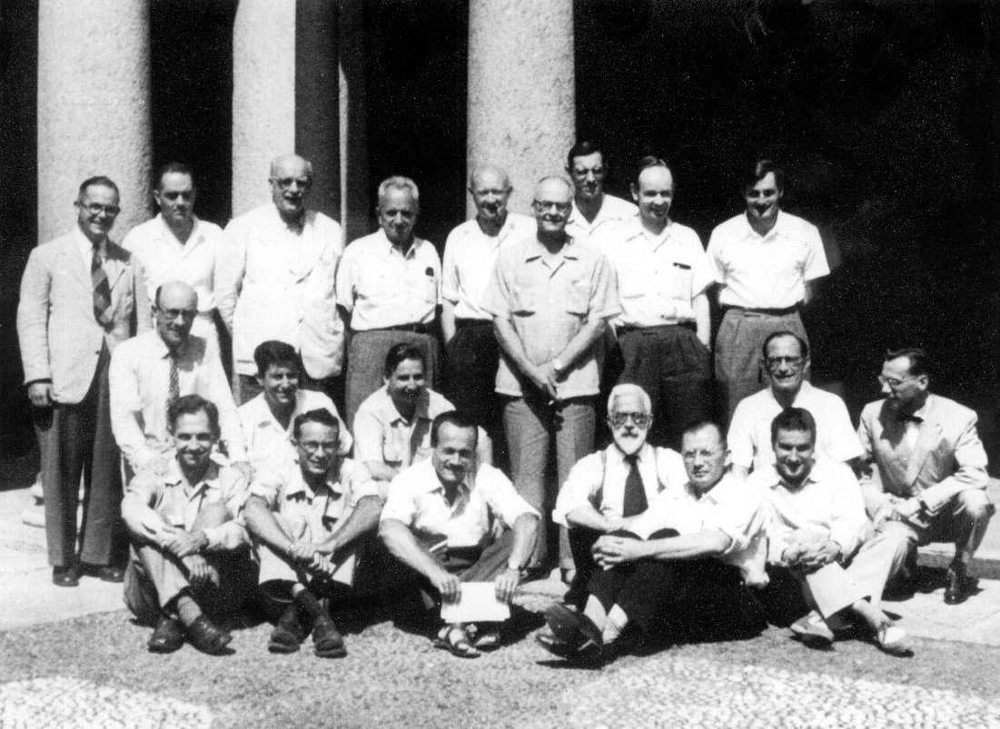

Placing your mouse pointer over a face should bring up a "tooltip" (yellow box) that shows the person's name. (You can click on the faces for identification and more information)
Back row: Mather, da Cunha, Haldane, Dobzhansky, Waddington, Epling, Carson, Robertson, Falconer
Middle row (crouching): Ford, Wallace, ?, (large gap) Lerner, Cordeiro(?)
Bottom row (sitting on ground): Mayr, Levine, Buzzati-Traverso, Fisher, Clausen, Pavan
The unidentified one may be Renzo Scossiroli. I have a complete list somewhere and will post it when I find it.